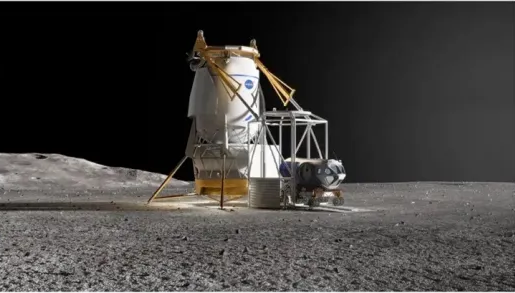

NASA to make lunar cargo delivery awards to Blue Origin and SpaceX
NASA plans to use cargo versions of Blue Origin’s Blue Moon and SpaceX’s Starship to deliver key infrastructure to the Moon in the early 2030s. Starship will deliver a pressurized rover developed by JAXA no earlier than 2032, while Blue Moon will deliver a lunar habitat no earlier than 2033. These missions build on existing contracts to develop cargo versions of their Human Landing System (HLS) spacecraft, capable of transporting 12-15 metric tons to the lunar surface. NASA will issue formal requests for proposals in early 2025 but has not disclosed the mission costs or reasons for assigning specific tasks to each company. This approach aims to ensure flexibility and a steady cadence of Moon landings for scientific discovery.
